EER 582 Assessment and Evaluation Techniques in Education
Learning and assessment, modes and methods, test construction, moderation and rubrics, assessment in Bangladesh, and programme evaluation models
Contents
- Contents
- Unit 1: Understanding Students' Learning
- Unit 2: Assessing Students' Learning
- Unit 3: Modes of Assessment
- Unit 4: Examinations and Tests Construction
- Unit 5: Moderation, Marking and Reporting
- Unit 6: Assessing Learning and Development
- Unit 7: Assessment Situation in Bangladesh
- Unit 8: Evaluation in Education
- Unit 9: Evaluation Approaches
- Unit 10: Methods of Evaluation
- Exam Preparation Bank
- References
About this course
Assessment and evaluation are two of the most powerful levers in any education system. What is assessed, and how, shapes what teachers teach and what students learn; how programmes are evaluated shapes which policies survive. In Bangladesh, where public examinations have long dominated schooling and where assessment reforms (creative questions, school-based assessment, the 2021 competency-based framework) have been introduced and reversed, a lecturer needs both technical skill and critical understanding.
EER 582 first connects assessment to learning (Units 1 to 3), then develops practical competence in constructing tests, moderating, marking and reporting with rubrics, and assessing learning and development beyond tests (Units 4 to 6). Unit 7 analyses assessment practices at each level in Bangladesh. Units 8 to 10 move from student assessment to evaluation, including its dimensions, classic models and methods for evaluating programmes.
Course objectives
Understand the role of assessment in educational practice and its relationship with teaching and learning.
Choose assessment schemes and methods that enhance learning, including alternative and authentic assessment.
Construct, standardise, moderate and mark tests and develop rubrics and reporting systems.
Appraise existing assessment schemes at various levels of education in Bangladesh.
Comprehend the meaning of evaluation, its difference from assessment, and the components of programme evaluation.
Apply evaluation models and methods to evaluate educational programmes for particular purposes.
Contents
01 Unit 1: Understanding Students' Learning
02 Unit 2: Assessing Students' Learning
03 Unit 3: Modes of Assessment
04 Unit 4: Examinations and Tests Construction
05 Unit 5: Moderation, Marking and Reporting
06 Unit 6: Assessing Learning and Development
07 Unit 7: Assessment Situation in Bangladesh
08 Unit 8: Evaluation in Education
09 Unit 9: Evaluation Approaches
10 Unit 10: Methods of Evaluation
11 Exam Preparation Bank
12 References
Each unit follows the official M.Ed syllabus order. Read the narrative first, then the boxes, then test yourself with the Exam focus questions.
Teal boxes = definitions and study tips. Golden boxes = must-remember ideas and exam focus. Green boxes = Bangladesh context. Ash boxes = critical perspectives expected at Master's level. Amber Verify before use boxes mark policy facts and statistics that change: check them against the latest BANBEIS, MoE, DPE, NCTB, UGC, UNESCO or World Bank sources before an exam.
The final chapter is a question bank (MCQs with answers, short and broad questions) in the style of university examinations, followed by full references in APA 7th style.
Unit 1: Understanding Students' Learning
1.1 Concept of learning, learning experience and learning outcome
Learning: A relatively permanent change in behaviour, knowledge, skills, attitudes or capacity that results from experience or practice (not from maturation, fatigue or drugs). Constructivists add that learning is the active construction of meaning by the learner.
Learning experience (Tyler, 1949): "The interaction between the learner and the external conditions in the environment to which he can react." Learning takes place through the active behaviour of the student; it is what the learner does that he learns, not what the teacher does.
Learning outcome: A statement of what a learner is expected to know, understand and be able to do at the end of a period of learning (e.g., "Students will be able to explain the causes of the Liberation War using at least three sources"). Outcomes are written with observable action verbs.
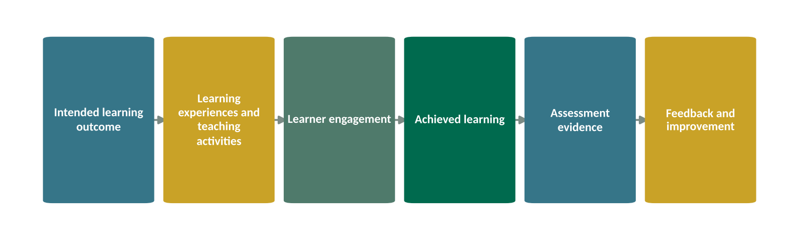
Figure 1. From intended outcomes to evidence of learning
1.2 Types of learning outcomes: basic and higher-order
Bloom's taxonomy (cognitive domain)
Bloom et al. (1956) classified cognitive objectives into six hierarchical levels; Anderson and Krathwohl (2001) revised them, using verbs and adding a knowledge dimension.
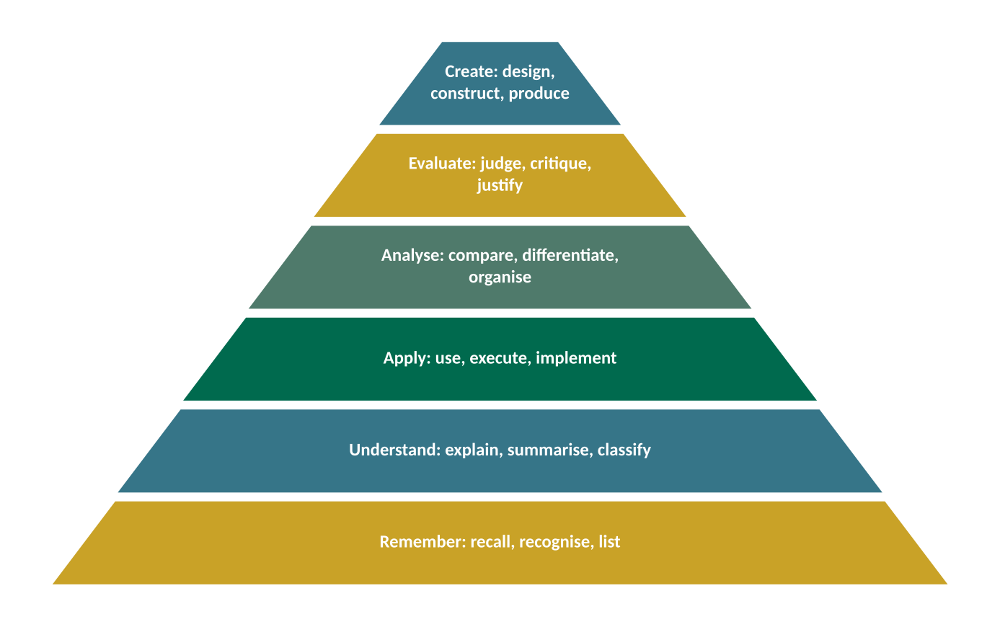
Figure 2. Revised Bloom's taxonomy (Anderson & Krathwohl, 2001)
| Knowledge dimension | Description | Example |
|---|---|---|
| Factual | Basic elements: terminology, specific details | Name the parts of a flower |
| Conceptual | Interrelationships: classifications, principles, theories | Explain how pollination leads to fertilisation |
| Procedural | How to do something: skills, techniques, methods | Use a microscope to observe pollen |
| Metacognitive | Knowledge of cognition and self-awareness | Plan how to revise for a biology test |
Table 1. Revised taxonomy: knowledge dimension × cognitive process
Basic (lower-order) outcomes: remember, understand, simple application. Higher-order outcomes: analyse, evaluate, create, problem-solving, critical and creative thinking.
Other taxonomies
| Taxonomy | Domain | Levels |
|---|---|---|
| Krathwohl, Bloom & Masia (1964) | Affective | Receiving, responding, valuing, organisation, characterisation by a value complex |
| Simpson (1972) / Harrow (1972) / Dave (1970) | Psychomotor | Dave: imitation, manipulation, precision, articulation, naturalisation |
| SOLO (Biggs & Collis, 1982) | Structure of observed learning outcomes | Prestructural, unistructural, multistructural, relational, extended abstract |
| Webb's Depth of Knowledge (1997) | Cognitive complexity | Recall, skill/concept, strategic thinking, extended thinking |
Table 2. Other taxonomies of learning outcomes
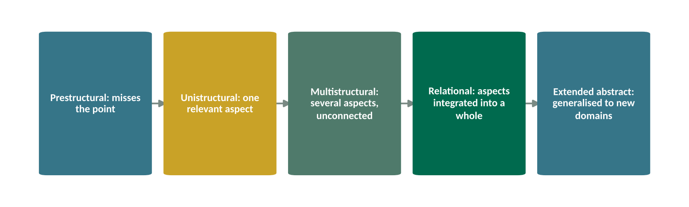
Figure 3. The SOLO taxonomy (Biggs & Collis, 1982)
1.3 Learning theories and their implications for assessment
| Theory | View of learning | Implications for assessment |
|---|---|---|
| Behaviourism (Thorndike, Skinner) | Change in observable behaviour through stimulus-response and reinforcement | Objective tests of discrete skills; mastery learning; immediate feedback |
| Cognitivism (Piaget, Ausubel, information processing) | Mental structures and processes; schema building | Assess understanding, misconceptions, problem-solving; concept maps |
| Constructivism (Piaget, Bruner) | Learners actively construct knowledge | Performance tasks, projects, portfolios; assessment embedded in learning |
| Social constructivism / sociocultural (Vygotsky) | Learning through social interaction and mediation; ZPD | Dynamic assessment; peer and self-assessment; scaffolding |
| Humanism (Rogers, Maslow) | Whole-person growth, self-direction | Self-assessment, reflective journals, learner choice |
| Connectivism (Siemens) | Learning in networks | Digital portfolios, assessing networked participation |
Table 3. Learning theories and assessment
1.4 Assessment and learning: relationships
Assessment drives learning: "Students can, with difficulty, escape from the effects of poor teaching; they cannot (by definition, if they want to graduate) escape the effects of poor assessment" (Boud, 1995).
Backwash (washback): the effect of assessment on teaching and learning, which can be positive or negative (Biggs, 2003).
Constructive alignment (Biggs & Tang, 2011): intended learning outcomes, teaching-learning activities and assessment tasks should be aligned.
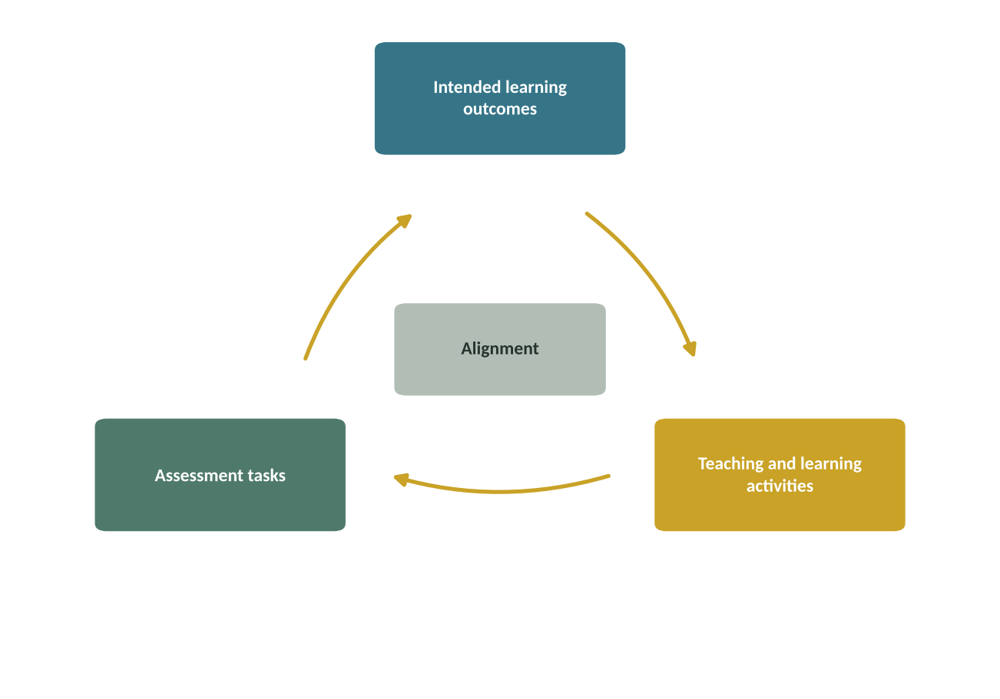
Figure 4. Constructive alignment (Biggs & Tang, 2011)
Black and Wiliam's (1998) review Inside the Black Box found that formative assessment produced learning gains with effect sizes of about 0.4 to 0.7, larger than most educational interventions, with particular benefits for lower-achieving students.
Likely questions: "Define learning, learning experience and learning outcome." "Explain basic and higher-order learning outcomes with reference to the revised Bloom's taxonomy and SOLO." "Discuss the relationship between learning theories and assessment." "What is constructive alignment?"
Unit 2: Assessing Students' Learning
2.1 Nature and aspects of assessment
Assessment (Harlen, 2007): "The process of gathering, interpreting and using evidence to make judgements about students' achievements in education."
Measurement, test and evaluation: Measurement assigns numbers to attributes according to rules; a test is an instrument or procedure for measuring a sample of behaviour; assessment is the broader process of gathering evidence by many methods; evaluation makes value judgements about worth or merit (of students, programmes or policies).
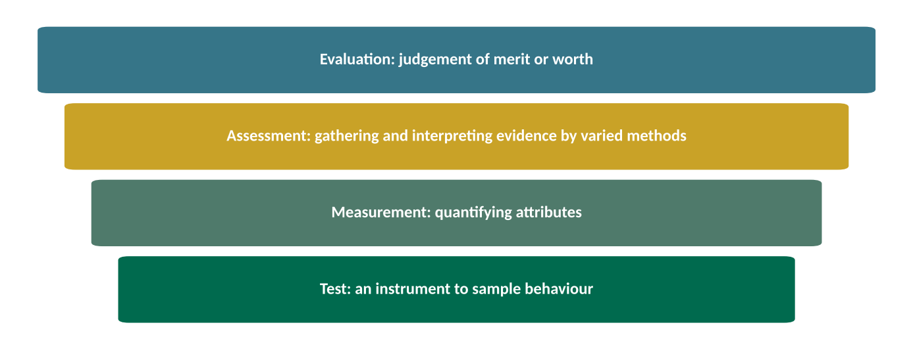
Figure 5. Relationship among test, measurement, assessment and evaluation
Aspects of assessment: purpose (why), content (what), method (how), timing (when), agent (who: teacher, self, peer, external), interpretation (norm-, criterion- or self-referenced), and use (feedback, grading, certification, selection, accountability).
2.2 Purposes: assessment of, for and as learning
| Aspect | Assessment OF learning | Assessment FOR learning | Assessment AS learning |
|---|---|---|---|
| Purpose | Summative: certify, rank, report | Formative: improve learning and teaching | Develop metacognition and self-regulation |
| When | End of unit, term, course | Ongoing during learning | Ongoing |
| Who assesses | Teacher, external body | Teacher, with students | Student (self) and peers |
| Reference point | Standards, other students | Learning goals, next steps | Personal goals, criteria |
| Use of results | Grades, certificates, promotion | Feedback, adjusting instruction | Reflection, self-monitoring |
| Example | SSC examination | Exit tickets, questioning, feedback on drafts | Learning journals, self-assessment against rubric |
Table 4. Assessment of, for and as learning (Earl, 2013)
Figure 6. Earl's reconfigured assessment pyramid: emphasis shifts from assessment of learning to assessment as and for learning
2.3 Models of assessment
| Model | Key idea | Key thinkers |
|---|---|---|
| Psychometric / measurement model | Precise, reliable measurement of fixed traits; norm-referenced; standardised tests | Thorndike; classical test theory; IRT |
| Educational / standards (criterion-referenced) model | Judge performance against defined criteria or standards | Glaser (1963); Popham |
| Formative assessment model | Assessment embedded in teaching to improve learning | Black & Wiliam (1998); Sadler (1989) |
| Ipsative model | Compare current with previous performance of the same learner | Hughes (2014) |
| Competency-based model | Assess demonstrated competencies in authentic tasks | Outcome-based education (Spady) |
| Sociocultural / dynamic assessment | Assess learning potential with mediation | Vygotsky; Feuerstein |
Table 5. Models of assessment
Gipps (1994) argued for a shift from the psychometric paradigm (testing as measurement of fixed ability) to an educational assessment paradigm (assessment to support learning, with validity, fairness and context emphasised).
Wiliam's five key strategies of formative assessment
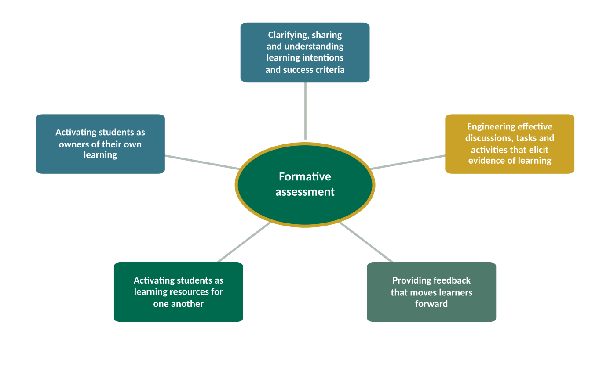
Figure 7. Five key strategies of formative assessment (Wiliam & Thompson, 2008)
Sadler (1989) identified three conditions for feedback to improve learning: the learner must know the goal (standard), where they are now (current performance) and how to close the gap. Hattie and Timperley (2007) framed effective feedback around three questions: Where am I going? How am I going? Where to next?
2.4 Role of assessment from different perspectives
| Perspective | Role of assessment |
|---|---|
| Student | Feedback on progress, motivation, certification, direction for study |
| Teacher | Diagnose needs, plan instruction, evaluate teaching effectiveness |
| Parents | Information on child's progress, decisions about support |
| Institution | Promotion, placement, accountability, quality assurance |
| Employers / higher education | Selection and certification of competence |
| Society / policy | Monitoring standards, accountability of the system, resource allocation |
Table 6. Role of assessment from stakeholders' perspectives
2.5 Side-effects of assessment and bias in assessment
Side-effects
Negative washback: teaching to the test, narrowing the curriculum, rote memorisation.
Shadow education: private coaching and guidebook dependence oriented to examinations.
Stress and anxiety; fear of failure; suicide risk linked to high-stakes results in severe cases.
Labelling and lowered self-esteem; self-fulfilling prophecies.
Malpractice: cheating, question paper leaks, grade inflation, lenient marking.
Campbell's law (1976): "The more any quantitative social indicator is used for social decision-making, the more subject it will be to corruption pressures and the more apt it will be to distort and corrupt the social processes it is intended to monitor."
Bangladesh illustrates many side-effects: the proliferation of coaching centres and guidebooks; question-paper leaks in public examinations (notably around 2012 to 2018); a dramatic rise in GPA-5 numbers that raised concerns about grade inflation; and the burden of multiple public examinations (PECE at Grade 5 and JSC at Grade 8, introduced in 2009 and 2010 and later discontinued). Mullick and Begum (2005) documented biases in secondary assessment practices.
Bias in assessment
| Bias | Example |
|---|---|
| Content / cultural bias | Items assume urban middle-class experiences (e.g., questions about lifts or shopping malls for rural children) |
| Linguistic bias | Complex language disadvantages second-language learners and indigenous children |
| Gender bias | Stereotyped contexts in items; differential item functioning |
| Socio-economic bias | Tasks requiring home resources (internet, materials) |
| Rater biases | Halo effect, leniency or severity, central tendency, contrast effect, handwriting and presentation effects, knowing the student's identity |
| Disability bias | Lack of accommodations (extra time, Braille, readers) |
Table 7. Sources of bias in assessment
Remedies: blind marking; clear rubrics; moderation; diverse item review panels; differential item functioning (DIF) analysis; universal design of assessment; accommodations.
2.6 Types of assessment, assessment methods and their choice
Choosing a method depends on the learning outcome (knowledge, skill, attitude), purpose (formative or summative), validity, reliability, practicality and fairness.
| Outcome type | Suitable methods |
|---|---|
| Recall of facts | MCQ, short answer, matching |
| Understanding concepts | Short explanation, concept maps, structured questions |
| Application and problem-solving | Problems, case studies, structured/creative questions |
| Analysis, evaluation, creation | Essays, projects, research reports, portfolios |
| Practical skills | Practical tests, performance assessment with checklists/rubrics |
| Communication | Presentations, debates, written reports |
| Attitudes and values | Observation, rating scales, self-reports, reflective journals |
Table 8. Matching learning outcomes with assessment methods
Expect: "Distinguish assessment of, for and as learning." "Explain models of assessment." "Discuss the side-effects of assessment practices in Bangladesh." "What are the sources of bias in assessment and how can they be reduced?"
Unit 3: Modes of Assessment
3.1 Different types of educational assessment
| Basis | Types |
|---|---|
| Purpose | Placement, diagnostic, formative, summative |
| Interpretation | Norm-referenced, criterion-referenced, ipsative |
| Agent | Teacher, self, peer, external |
| Formality | Formal (planned, recorded) vs informal (observation, questioning) |
| Location | Internal (school-based) vs external (public examination) |
| Timing | Continuous vs terminal |
| Format | Paper-pencil, performance, oral, computer-based |
| Stakes | High-stakes vs low-stakes |
Table 9. Types of educational assessment
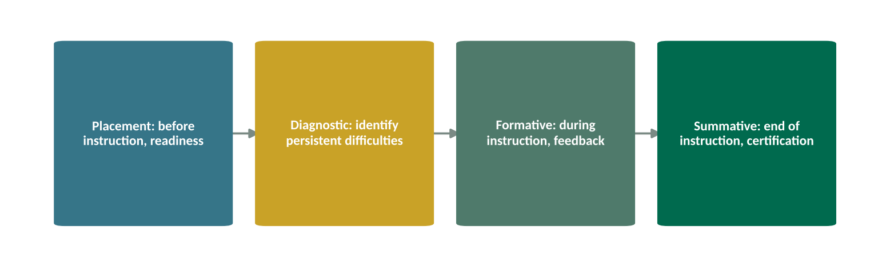
Figure 8. Assessment across the instructional sequence (Airasian & Madaus)
| Aspect | Norm-referenced | Criterion-referenced |
|---|---|---|
| Purpose | Rank and compare students | Determine mastery of defined criteria |
| Interpretation | Relative to a norm group | Relative to standards |
| Item selection | Items of moderate difficulty that discriminate | Items representing the domain fully |
| Example | Admission test ranking | Driving test; grade-level competency test |
Table 10. Norm-referenced versus criterion-referenced assessment
3.2 Continuous assessment: concept, purpose and nature
Continuous assessment: A systematic, ongoing process of gathering evidence of learners' achievement throughout a course, using varied methods (class tests, assignments, observation, projects, portfolios), and using it both to support learning and to contribute to final grades.
Purposes: monitor progress, provide timely feedback, reduce dependence on one examination, assess a broader range of outcomes, motivate regular learning.
Nature: cumulative, comprehensive, diagnostic, formative, guidance-oriented and systematic.
Challenges: teacher workload, large classes, record-keeping, risk of becoming "continuous testing", reliability and favouritism concerns, parental distrust.
3.3 Performance-based assessment
Performance assessment: Assessment in which students demonstrate knowledge and skills by performing a task or creating a product, judged against criteria (e.g., conducting an experiment, delivering a speech, building a model).
Steps: identify the performance outcome; design a realistic task; specify criteria; develop a rubric or checklist; train raters; give feedback.
3.4 Classroom assessment: concept, purpose and nature
Classroom assessment is assessment designed and used by teachers within their classrooms, mainly for formative purposes. Angelo and Cross (1993) developed Classroom Assessment Techniques (CATs):
| Technique | Procedure |
|---|---|
| Minute paper | Students write the most important thing learned and one question remaining |
| Muddiest point | Students write what was least clear |
| Exit ticket | Short question answered before leaving |
| Think-pair-share | Individual thinking, pair discussion, class sharing |
| Traffic lights / fist-to-five | Students signal understanding level |
| Concept map | Students map relationships among concepts |
| One-sentence summary | Who does what to whom, when, where, how and why |
| Mini whiteboards / ABCD cards | All students respond simultaneously |
Table 11. Selected classroom assessment techniques
3.5 Alternative and authentic assessment
Alternative assessment refers to any assessment other than traditional paper-pencil tests: portfolios, projects, presentations, exhibitions, self- and peer-assessment, journals, interviews.
Authentic assessment (Wiggins, 1990): Assessment is authentic "when we directly examine student performance on worthy intellectual tasks", requiring students to use knowledge in realistic contexts, replicating the challenges faced by adults and professionals.
| Traditional | Authentic |
|---|---|
| Selecting a response | Performing a task |
| Contrived | Real-life |
| Recall / recognition | Construction / application |
| Teacher-structured | Student-structured |
| Indirect evidence | Direct evidence |
Table 12. Traditional and authentic assessment compared (after Mueller)
Portfolios: purposeful collections of student work showing effort, progress and achievement, with student selection and reflection. Types: working, showcase, assessment portfolios; e-portfolios.
3.6 Role of different types of assessment for students' learning
Formative and authentic assessments promote deeper learning, motivation and self-regulation; summative and external assessments provide certification and accountability but can narrow learning if they dominate. A balanced assessment system combines classroom formative assessment, school-based summative assessment and external assessments, all aligned to the same learning goals.
Expect: "Distinguish formative, summative, diagnostic and placement assessment." "What is continuous assessment? Discuss its purposes and challenges." "Explain authentic assessment with examples." "Describe five classroom assessment techniques."
Unit 4: Examinations and Tests Construction
4.1 Functions of examination
Certification: confirm achievement of a level.
Selection and placement: admission to higher levels or programmes.
Motivation: encourage study.
Feedback and diagnosis: to students and teachers.
Accountability: inform parents, institutions and the public.
Curriculum control: examinations signal what is valued.
Prediction: of future success.
4.2 Tests: nature, purpose, scope and limitations
A test is a systematic procedure for observing and describing one or more characteristics of a person with the aid of a numerical scale or category system (Cronbach). Good tests have validity, reliability, objectivity, usability (practicality) and discrimination.
Limitations: sample only part of the domain; measurement error; may encourage memorisation; cultural bias; anxiety; inadequate for complex skills and attitudes.
Planning a test: the table of specifications (blueprint)
| Content area | Remember | Understand | Apply | Higher order | Total |
|---|---|---|---|---|---|
| Cells and tissues | 3 | 4 | 3 | 2 | 12 |
| Photosynthesis | 3 | 5 | 4 | 3 | 15 |
| Respiration | 2 | 4 | 4 | 3 | 13 |
| Ecosystems | 3 | 5 | 6 | 6 | 20 |
| Total | 11 | 18 | 17 | 14 | 60 |
Table 13. Sample table of specifications for a Grade 9 science test (60 marks)
The blueprint ensures content validity by sampling content and cognitive levels in proportion to their importance and teaching time.
4.3 Essay-type questions: principles and practices
Short-answer (restricted response) limits content and form ("List three causes..."); long-answer (extended response) allows freedom to organise and develop ideas.
Strengths: measure higher-order thinking, organisation, expression; easy to construct. Limitations: limited content sampling; subjective and unreliable scoring; time-consuming marking; bluffing.
Principles of writing essay questions:
1. Use essays for outcomes that cannot be measured well by objective items.
2. Define the task clearly with specific verbs ("compare", "evaluate") and scope.
3. Indicate marks and suggested time.
4. Avoid optional questions when comparability matters (they reduce reliability).
5. Prepare a model answer or rubric in advance.
4.4 Objective-type items: principles and practices
| Item type | Guidelines | Common flaws |
|---|---|---|
| Multiple choice (stem + key + distractors) | Clear stem with a central problem; plausible, homogeneous distractors; one best answer; 3 to 4 options; avoid "all of the above"; avoid negatives or highlight them; options of similar length | Grammatical cues, longest-option-correct, implausible distractors, overlapping options |
| True-false | Simple statements; one idea; avoid specific determiners ("always", "never"); balance true and false | High guessing (50%), ambiguity |
| Matching | Homogeneous lists; more responses than premises; brief responses on the right; instructions on reuse | Heterogeneous lists, clues |
| Fill in the blank (completion) | One blank near the end; only key words omitted; one correct answer | Multiple acceptable answers, too many blanks |
Table 14. Objective item types and writing guidelines
Research on MCQ item-writing flaws (e.g., Tarrant et al., 2006) shows flawed items are common in teacher-made and high-stakes tests and disadvantage high-achieving students. Well-written MCQs can assess application and analysis (context-dependent items using scenarios, data or passages).
Item analysis
Difficulty index p = (U + L) / (2n)
Discrimination index D = (U − L) / n
where U and L are the numbers answering correctly in the upper and lower groups (often top and bottom 27%), each of size n
With n = 20 in each group, if 16 in the upper group and 8 in the lower group answer an item correctly: p = 24 / 40 = 0.60 (moderate difficulty); D = (16 − 8) / 20 = 0.40 (very good discrimination). Ebel's guideline: D ≥ .40 very good; .30 to .39 reasonably good; .20 to .29 marginal; < .20 poor (revise or discard). Distractors chosen by no one or chosen more by the upper group should be revised.
4.5 Structured / creative questions: principles and practices
Bangladesh introduced creative questions (srijonshil prosno), a form of structured question, at SSC from 2008 and later across subjects and levels. Each question presents a stem (a scenario, passage, diagram or data) followed by four parts aligned to Bloom-based levels: (a) knowledge, (b) comprehension, (c) application, and (d) higher-order abilities (analysis, synthesis, evaluation), typically worth 1, 2, 3 and 4 marks. The aim was to reduce rote memorisation and guidebook dependence.
| Part | Cognitive level | Marks | Example (Bangladesh and Global Studies) |
|---|---|---|---|
| Stem | — | — | A short scenario about a village where floods disrupt schooling every year |
| (a) | Knowledge | 1 | What is the Delta Plan? |
| (b) | Comprehension | 2 | Explain why floods affect school attendance. |
| (c) | Application | 3 | How can the village school apply disaster preparedness measures? |
| (d) | Higher-order | 4 | Evaluate the role of government and community in ensuring education during floods. |
Table 15. Structure of a creative (structured) question
Studies found that creative questions were poorly understood by many teachers, questions were often copied from guidebooks, and students memorised answers to anticipated stems, which reproduced the problem they were meant to solve. Begum and Ahmed (2007) questioned whether secondary assessment tools encouraged higher-order learning. Effective implementation requires teacher training in item writing, question banks, and novel stems in examinations.
4.6 Standardisation of tests
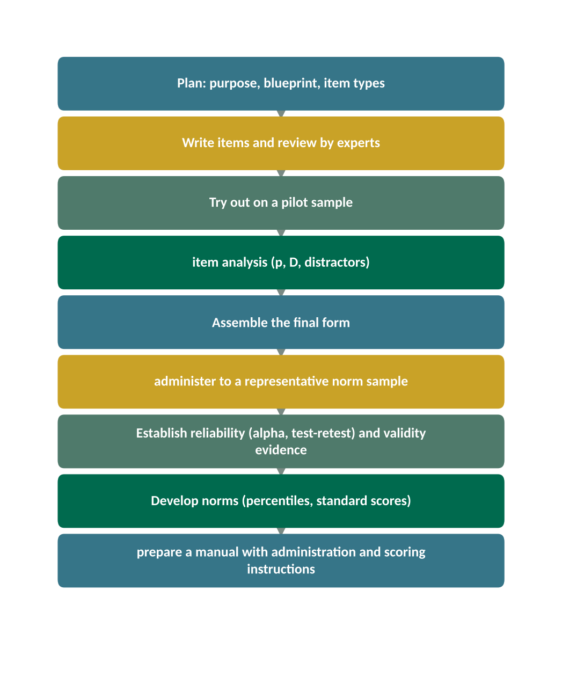
Figure 9. Steps in standardising a test
4.7 Administering tests in an appropriate manner
Prepare the physical setting (light, seating, spacing to prevent copying).
Give standard, clear instructions; check understanding.
Follow time limits; announce time remaining.
Maintain invigilation and security of papers.
Provide accommodations for students with disabilities (extra time, scribe, large print).
Reduce anxiety through a calm, supportive environment.
Record irregularities.
Expect: "Discuss the functions of examination." "Prepare a table of specifications for a test." "State principles of constructing MCQs and essay questions." "Compute and interpret item difficulty and discrimination indices." "What are creative questions? Critically evaluate their use in Bangladesh." "Describe the steps of test standardisation."
Unit 5: Moderation, Marking and Reporting
5.1 Concept of moderation and its types
Moderation: The process of ensuring that assessment judgements are consistent, fair and comparable across markers, classes, schools or boards, so that the same standard is applied to all students.
| Type | Description | Example |
|---|---|---|
| Consensus (social) moderation | Teachers meet to discuss and agree on standards using samples of work | Department moderation meeting before finalising grades |
| Expert / inspection moderation | An external moderator reviews a sample of marked work and adjusts | Chief examiner reviews examiners' scripts |
| Statistical moderation | Adjusting school-based marks using an external reference test | Scaling school-based marks to align with a common exam (Wilmut & Tuson, 2005) |
| Pre-moderation (of tasks) | Reviewing tasks and marking schemes before use | Question moderation committee for public exams |
| Post-moderation (of results) | Reviewing marked work after assessment | Second marking of scripts |
Table 16. Types of moderation
Public examination boards in Bangladesh use head examiners and chief examiners who check samples of scripts marked by examiners, and question-setting and moderation committees review question papers. Concerns have included inconsistent marking, lenient instructions, and limited time for examiners.
5.2 Functions of marking and reporting systems
Communicate achievement to students, parents and institutions.
Provide feedback for improvement.
Inform decisions about promotion, placement and certification.
Motivate learners.
Maintain records for accountability.
5.3 Rubrics: concept, nature and purpose
Rubric (Brookhart, 2013): "A coherent set of criteria for students' work that includes descriptions of levels of performance quality on the criteria."
| Type | Description | Advantages | Limitations |
|---|---|---|---|
| Analytic | Separate scores for each criterion | Detailed feedback; diagnostic | Time-consuming |
| Holistic | Single overall score based on overall impression | Quick; good for summative | Less specific feedback |
| Generic | Applicable across many tasks (e.g., writing quality) | Reusable; supports transfer | Less task-specific |
| Task-specific | Tied to one task | Precise | Cannot be reused; may give away answers |
| Single-point | Lists criteria for proficiency with space for comments above/below | Simple; encourages feedback | Less structured scoring |
| Developmental / learning progression | Describes stages of growth across years | Shows progress over time | Complex to develop |
Table 17. Types of rubrics
5.4 Developing rubrics and reporting systems
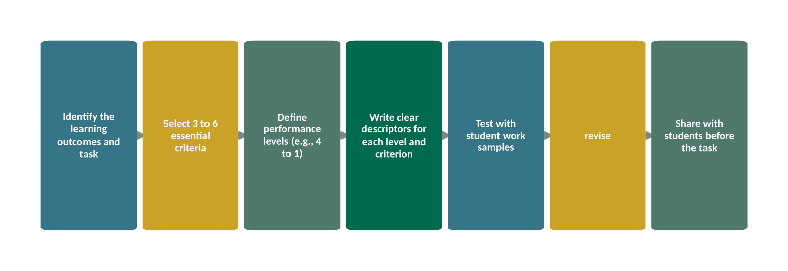
Figure 10. Steps in developing an analytic rubric
| Criterion | Excellent (4) | Proficient (3) | Developing (2) | Beginning (1) |
|---|---|---|---|---|
| Thesis and argument | Clear, insightful thesis; strong logical argument | Clear thesis; logical argument | Vague thesis; some logic | No clear thesis |
| Evidence | Relevant, varied, well-integrated evidence | Relevant evidence, mostly integrated | Limited or loosely connected evidence | Little or irrelevant evidence |
| Organisation | Coherent structure with effective transitions | Clear structure | Some organisation | Disorganised |
| Language and conventions | Precise, varied language; virtually error-free | Clear language; minor errors | Errors sometimes impede meaning | Frequent errors impede meaning |
Table 18. Sample analytic rubric for an argumentative essay
Reporting systems
| Format | Description |
|---|---|
| Marks and percentages | Numerical scores |
| Letter grades and GPA | A+ to F mapped to grade points (Bangladesh SSC/HSC: GPA 5.00 scale) |
| Standards-based report cards | Achievement on each standard/competency (e.g., beginning, developing, proficient) |
| Narrative reports | Written comments on strengths and next steps |
| Portfolios and student-led conferences | Students present evidence of learning |
| Digital dashboards | Online reports for parents |
Table 19. Common reporting formats
| Marks (%) | Letter grade | Grade point |
|---|---|---|
| 80-100 | A+ | 5.00 |
| 70-79 | A | 4.00 |
| 60-69 | A− | 3.50 |
| 50-59 | B | 3.00 |
| 40-49 | C | 2.00 |
| 33-39 | D | 1.00 |
| 0-32 | F | 0.00 |
Table 20. Bangladesh SSC/HSC grading system
Confirm the current grading table and any changes to the GPA system announced by the education boards (some reforms have been discussed for higher secondary and for the new curriculum).
5.5 Functions and types of rubric and reporting
Functions of rubrics: clarify expectations; guide students' self- and peer-assessment; increase scoring reliability and transparency; provide feedback; support moderation. Functions of reporting: communicate, motivate, inform decisions, maintain records.
5.6 Score correction for MCQ answers
To discourage guessing, a correction for guessing (formula scoring) may be applied.
S = R − W / (k − 1)
where S = corrected score, R = number right, W = number wrong (omitted items not counted), k = number of options per item
On a 60-item test with four options, a student answers 40 correctly, 16 wrongly and omits 4. S = 40 − 16 / 3 = 40 − 5.33 = 34.67. With true-false items (k = 2), S = R − W.
Frary (1988) noted that correction for guessing changes rank order very little when nearly all items are attempted, may penalise risk-averse students (often girls) who omit items, and encourages test-wiseness strategies. Many testing programmes therefore advise students to answer every item and do not use correction. Bangladesh's public examinations do not apply negative marking at school level, while some admission tests (e.g., university entrance) use negative marking (e.g., 0.25 deducted per wrong answer).
Confirm current negative-marking rules for specific admission tests and the BCS preliminary examination, which change by year and institution.
5.7 Principles of assessing essay-type answers
1. Prepare a model answer or analytic rubric before marking.
2. Mark question by question (all students' Q1, then Q2) rather than script by script.
3. Mark anonymously (cover names or use roll numbers).
4. Shuffle scripts between questions to avoid order effects.
5. Decide in advance how to treat spelling, grammar and irrelevant material.
6. Avoid halo effects from handwriting, length or prior knowledge of the student.
7. Use double marking or moderation for high-stakes decisions.
8. Write constructive comments for feedback.
Expect: "What is moderation? Explain its types." "Develop an analytic rubric for a project." "Distinguish analytic and holistic rubrics." "Compute the corrected score for MCQs and discuss the merits of correction for guessing." "State principles of marking essay answers."
Unit 6: Assessing Learning and Development
6.1 Observational techniques
| Technique | Description | Advantages | Limitations |
|---|---|---|---|
| Anecdotal records | Brief, factual written descriptions of significant incidents, with date and context, followed by separate interpretation | Captures natural behaviour; rich detail | Time-consuming; selective; subjective |
| Rating scales | Judgement of the degree or frequency of a characteristic on a scale (numerical, graphic, descriptive) | Quick; comparable; covers many traits | Rater errors: halo, leniency, severity, central tendency |
| Checklists | List of behaviours or steps marked present/absent | Simple; good for procedures and skills | No information on quality or degree |
| Pupils' participation in rating | Students rate themselves or peers using scales | Develops self-assessment; multiple perspectives | Bias, popularity effects; needs training |
Table 21. Observational techniques for assessing behaviour
| Student: Karim, Grade 4 | Date: 5 May | Setting: Group work, mathematics |
|---|---|---|
| Incident: Karim, who rarely speaks in class, explained to his group how to share 12 mangoes among 4 children using drawings. | ||
| Interpretation (separate): Karim may understand division concretely and gain confidence in small groups. Plan more small-group tasks. |
Table 22. Sample anecdotal record
| Step | Yes | No |
|---|---|---|
| Reads instructions before starting | ||
| Wears safety goggles | ||
| Measures liquids at eye level | ||
| Records observations in a table | ||
| Cleans equipment after use |
Table 23. Sample checklist for a science practical skill
6.2 Peer appraisal and self-report techniques
Peer appraisal
Guess-who technique: students read descriptions ("This person always helps others") and name classmates who fit.
Sociometric technique (Moreno): students nominate peers for activities; results shown as sociograms (see ED 504).
Peer assessment of work: students assess classmates' products using rubrics.
Self-report techniques
Self-assessment of learning against criteria; learning logs; reflective journals.
Attitude measurement
Attitudes are measured by Likert scales, Thurstone scales, semantic differentials, Guttman scales and observation (see ED 504 for construction).
Interest inventories
| Inventory | Basis |
|---|---|
| Strong Interest Inventory (Strong, 1927) | Compares a person's interests with those of people in occupations; now includes Holland's themes |
| Kuder Preference Record (Kuder) | Interest areas (outdoor, mechanical, computational, scientific, persuasive, artistic, literary, musical, social service, clerical) |
| Holland's Self-Directed Search (SDS) | RIASEC: Realistic, Investigative, Artistic, Social, Enterprising, Conventional |
Table 24. Interest inventories
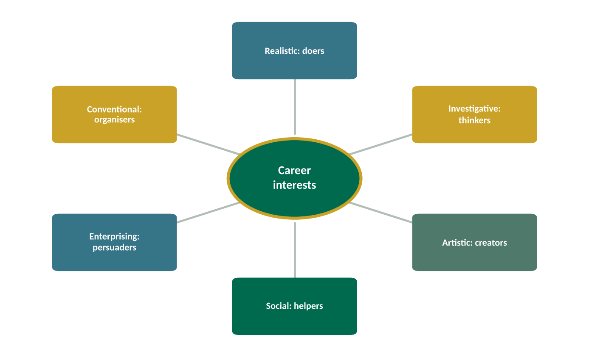
Figure 11. Holland's RIASEC interest types
Personality measurement
Personality inventories (self-report questionnaires) such as the Big Five (NEO-PI-R / BFI): Openness, Conscientiousness, Extraversion, Agreeableness, Neuroticism (OCEAN); MMPI (clinical); 16PF (Cattell). Projective techniques (Rorschach inkblots, TAT) are used by trained psychologists. Teachers should use personality measures cautiously, for guidance rather than labelling, and only validated instruments with appropriate training.
Self-report measures are vulnerable to social desirability, acquiescence (yea-saying) and lack of self-insight. Triangulate with observation and peer data.
Expect: "Describe observational techniques for assessing students' behaviour." "What is an anecdotal record? Prepare a sample." "Distinguish rating scales and checklists." "Explain peer appraisal and self-report techniques." "What are interest inventories?"
Unit 7: Assessment Situation in Bangladesh
7.1 Nature of student assessment at various levels
| Level | Internal assessment | Public / external assessment | Key issues |
|---|---|---|---|
| Pre-primary | Observation-based; no formal tests (policy) | None | Pressure from parents for academic tests in private schools |
| Primary (Grades 1 to 5) | Terminal examinations (half-yearly, annual); continuous assessment introduced through PEDP; no formal exams in Grades 1 and 2 (policy) | Primary Education Completion Examination (PECE) at Grade 5 from 2009 until 2019 (not held from 2020); National Student Assessment (NSA) sample-based; a scholarship examination at Grade 5 was reintroduced | Test-focused culture; coaching from early grades; teachers' limited assessment literacy |
| Junior secondary (Grades 6 to 8) | School terminal exams; under NCF 2021, continuous and summative assessment by competencies (2023 to 2024) | Junior School Certificate (JSC) and JDC from 2010 to 2019 (discontinued) | Policy instability |
| Secondary (Grades 9 to 10) | School tests, pre-test, selection test; practical marks | Secondary School Certificate (SSC) and equivalents (Dakhil, SSC Vocational) by education boards | High stakes; creative questions; guidebooks; GPA-5 inflation; leaks (historically) |
| Higher secondary (Grades 11 to 12) | College tests | Higher Secondary Certificate (HSC) and equivalents (Alim, HSC Vocational/BM) | Admission pressure; coaching |
| Higher education | Semester-based continuous assessment (class tests, assignments, mid-term, attendance) plus final examinations; outcome-based education (OBE) emerging with BAC accreditation | Admission tests (cluster systems at some universities) | Variable quality; limited rubrics; emphasis on finals |
Table 25. Student assessment by level in Bangladesh (indicative)
Assessment policy changed frequently between 2009 and 2025 (PECE and JSC suspended and abolished; the competency-based assessment of NCF 2021 was introduced and later reversed; Grade 5 scholarship examinations reinstated). Confirm the current arrangements announced by MoPME, MoE, NCTB and the education boards before the exam.
7.2 Public examinations: nature and critical analysis of tests
Nature: centrally set, board-administered, high-stakes, largely paper-based; mix of MCQ (objective) and creative (structured) questions; practicals in science subjects; results reported as GPA.
Critical analysis:
Validity: emphasis on recall even within creative questions; limited assessment of practical, oral, collaborative and higher-order skills.
Reliability: marker inconsistency; limited moderation time; lenient marking instructions alleged in some years.
Washback: coaching, guidebooks, memorisation; narrowing of curriculum to examinable subjects.
Equity: urban and private schools perform better; costs of coaching disadvantage the poor.
Integrity: question leaks undermined credibility (e.g., 2014 to 2018); countermeasures included question sets distributed digitally on exam morning.
Grade inflation: rapid growth in GPA-5 numbers created a ceiling effect, reducing the discriminating power of results for admission.
7.3 Review of the assessment scheme at institution, SSC and HSC level
| Strengths | Weaknesses |
|---|---|
| Standardised and nationally recognised | High stakes, single-shot |
| Objective MCQ component improves reliability | MCQ often recall-based; reduced later in weight |
| Creative questions aim at higher-order thinking | Implementation weaknesses; guidebook dependence |
| Transparent GPA reporting | Grade inflation; limited information on specific competencies |
| Practical component in science | Practical marks often inflated |
Table 26. Strengths and weaknesses of current SSC/HSC assessment scheme
School-based assessment (SBA) was piloted at secondary level from around 2007 (with 30% weight for SBA proposed), but was withdrawn amid concerns about teacher capacity, fairness and workload (Begum & Farooqui, 2008). Lessons: SBA needs teacher training, moderation, manageable record-keeping and public trust.
7.4 Continuous assessment at primary level: review and critique
Under PEDP II, PEDP3 and PEDP4, continuous assessment (CA) and competency-based approaches were promoted, with teacher guides and training (including in the Diploma in Primary Education, DPEd). Reviews found that CA was frequently implemented as additional tests and record-keeping rather than formative feedback; large class sizes, teacher shortages and examination pressure (especially while PECE existed) limited its effect.
The 2021 National Curriculum Framework proposed that Grades 1 to 3 be assessed fully through continuous (learning-period) assessment and that higher grades combine continuous and summative assessment, reporting achievement through performance indicators and descriptors rather than marks. Public concern about the absence of marks and about record-keeping contributed to its reversal.
The Bangladesh experience shows that assessment reform succeeds only when teacher assessment literacy, public understanding, manageable workload, moderation systems and alignment with high-stakes examinations are all addressed together. Reforms imposed quickly, without piloting and communication, tend to be resisted or ritualised.
Expect: "Describe the nature of student assessment at different levels in Bangladesh." "Critically analyse SSC and HSC examinations." "Review continuous assessment at primary level." "Why did school-based assessment fail in Bangladesh? What lessons can be learned?"
Unit 8: Evaluation in Education
8.1 Conceptualising evaluation
Evaluation (Scriven, 1991): "The process of determining the merit, worth, or value of something, or the product of that process."
Evaluation (Stufflebeam, 1971): "The process of delineating, obtaining, and providing useful information for judging decision alternatives."
Evaluation (Tyler, 1949): "The process of determining to what extent the educational objectives are actually being realised by the programme of curriculum and instruction."
Evaluation (Weiss, 1972): "The systematic assessment of the operation and/or the outcomes of a program or policy, compared to a set of explicit or implicit standards, as a means of contributing to the improvement of the program or policy."
Merit is intrinsic quality; worth is value in a particular context (Scriven). Evaluation thus combines evidence with judgement against criteria.
8.2 Difference between assessment and evaluation
| Aspect | Assessment | Evaluation |
|---|---|---|
| Focus | Individual learners' learning | Programmes, curricula, institutions, policies (and sometimes learners) |
| Purpose | Improve learning; describe achievement | Judge merit or worth; inform decisions |
| Orientation | Often formative, diagnostic | Often summative and judgemental (but also formative) |
| Data | Student work, tests, observation | Multiple sources including assessment data, costs, stakeholder views |
| Questions | What has the student learned? | Is the programme effective, efficient, relevant, sustainable? |
| Users | Students, teachers, parents | Managers, policymakers, funders, communities |
Table 27. Assessment versus evaluation
8.3 Programme evaluation
Programme evaluation (Fitzpatrick, Sanders & Worthen, 2012): "The identification, clarification, and application of defensible criteria to determine an evaluation object's value (worth or merit) in relation to those criteria."
Common evaluation criteria (OECD-DAC, revised 2019): relevance, coherence, effectiveness, efficiency, impact and sustainability.
| Type | Question | Timing |
|---|---|---|
| Needs assessment | What problems and needs exist? | Before |
| Evaluability assessment | Is the programme ready to be evaluated? | Before / early |
| Process / implementation evaluation | Is the programme implemented as planned? With fidelity? | During |
| Outcome evaluation | Did intended short- and medium-term outcomes occur? | After |
| Impact evaluation | What long-term changes are attributable to the programme? (often experimental or quasi-experimental) | After |
| Cost-effectiveness / cost-benefit | What are costs relative to outcomes? | After |
| Meta-evaluation | How good was the evaluation itself? | After |
Table 28. Types of programme evaluation
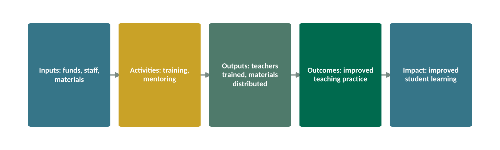
Figure 12. A programme logic model (theory of change)
8.4 Steps in evaluation: plan, process and output
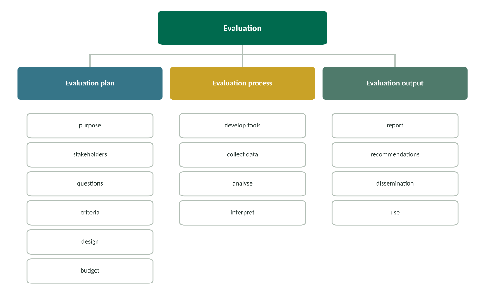
Figure 13. Steps in evaluation
| Evaluation question | Indicator / criterion | Data source | Method | Timing | Responsible |
|---|---|---|---|---|---|
| Did teachers use activity-based methods after training? | % of observed lessons with group activities | Classrooms | Observation checklist | Months 3 and 6 | Evaluation team |
| Did students' reading improve? | Mean fluency (words per minute) | Students | EGRA-type test | Baseline, endline | External assessors |
| Was the programme cost-effective? | Cost per student per unit gain | Budget records, test data | Cost analysis | End | Finance officer, evaluator |
Table 29. Elements of an evaluation plan (evaluation matrix)
Expect: "Define evaluation (Scriven, Stufflebeam, Tyler)." "Differentiate assessment and evaluation." "What is programme evaluation? Describe its types." "Explain the steps in evaluation: plan, process and output."
Unit 9: Evaluation Approaches
9.1 Dimensions of evaluation
| Dimension | First pole | Second pole |
|---|---|---|
| Formative-summative (Scriven, 1967) | Formative: improves a programme during development ("when the cook tastes the soup") | Summative: judges overall merit at the end ("when the guests taste the soup", Stake) |
| Formal-informal | Formal: systematic, planned, documented | Informal: casual, intuitive judgements |
| Case particular-generalisation | Focus on the specific case (this programme in this school) | Aim to generalise to other settings |
| Product-process | Product: outcomes and results | Process: how the programme operates |
| Descriptive-judgemental | Describe what happens | Judge merit and worth |
| Holistic-analytic | Holistic: the programme as a whole | Analytic: components or variables separately |
| Internal-external | Internal: by programme staff | External: by independent evaluators |
| Preordinate-responsive (Stake, 1975) | Preordinate: pre-specified objectives, formal instruments, objective reports | Responsive: responds to stakeholders' concerns and issues as they emerge; uses natural communication |
Table 30. Dimensions of evaluation
9.2 Models of evaluation
The syllabus lists models adapted from Hopkins (1989), Evaluation for School Development, which drew on Parlett and Hamilton (1972) and MacDonald and Walker.
The classical / agricultural-botany model
Derived from agricultural experiments (Fisher) in which plots receive different treatments and yields are measured. In education, students are given pretests, exposed to a programme, and given post-tests; results are compared with a control group. It emphasises objectives, measurement and experimental design (Tyler's objectives model is related).
Strengths: rigour, quantifiable results. Limitations: Parlett and Hamilton (1972) criticised it as treating students like plants: it ignores context, process and participants' experience; assumes stable conditions; and focuses on narrow, measurable outcomes.
The research and development (R&D) / industrial-factory model
Treats curriculum development like industrial product development: define objectives, design materials, field-test, measure against specifications, revise, and disseminate. Evaluation checks whether the "product" meets its specifications (quality control). Common in large curriculum projects of the 1960s and 1970s.
Limitations: assumes teachers are passive implementers; mechanistic view of education; ignores local adaptation.
The illuminative / anthropological model
Parlett and Hamilton (1972) proposed illuminative evaluation: "to study the innovatory programme: how it operates; how it is influenced by the various school situations in which it is applied; what those directly concerned regard as its advantages and disadvantages; and how students' intellectual tasks and academic experiences are most affected." It focuses on the instructional system (the formal plan) and the learning milieu (the social-psychological and material environment). Methods: observation, interviews, questionnaires and documents, in three overlapping stages: observe, inquire further, seek to explain ("progressive focusing").
The briefing decision-makers / political model
(Included in Hopkins's list.) The evaluator provides information to decision-makers, often external, to support policy choices; MacDonald (1976) distinguished bureaucratic, autocratic and democratic evaluation according to whose interests the evaluation serves.
The teacher as researcher / professional model
Based on Stenhouse: teachers evaluate their own practice systematically as part of professional development (closely linked to action research). Evaluation is formative, internal and improvement-oriented. Strengths: ownership, relevance, professional growth. Limitations: time, skills, potential bias, limited external credibility.
The case study / portrayal model
Stake's responsive evaluation and portrayal aim to give a holistic, vivid account of a programme case, representing the perspectives of different stakeholders so that audiences can make their own judgements. MacDonald and Walker's democratic evaluation emphasises negotiation and access for all stakeholders.
| Model | Purpose | Methods | Role of evaluator | Criticisms |
|---|---|---|---|---|
| Classical / agriculture-botany | Measure attainment of objectives; compare outcomes | Pre-post tests, control groups | Detached scientist | Ignores context and process |
| R&D / industrial-factory | Quality control of products | Field-testing against specifications | Technician | Mechanistic; teachers as implementers |
| Illuminative / anthropological | Understand and illuminate how a programme works | Observation, interviews, documents | Interpreter, anthropologist | Subjectivity; limited generalisation |
| Briefing decision-makers | Inform policy | Mixed; selective data for decisions | Consultant to power | Serves powerful interests |
| Teacher as researcher / professional | Improve practice | Action research, self-evaluation | Practitioner | Time, rigour, bias |
| Case study / portrayal | Portray the case from multiple perspectives | Case study, narrative, responsive methods | Portrayer, negotiator | Labour-intensive; judgements left to readers |
Table 31. Comparison of evaluation models (after Hopkins, 1989)
Other widely used models
| Model | Originator | Key features |
|---|---|---|
| Objectives-oriented | Ralph Tyler (1949) | Evaluate attainment of predefined behavioural objectives |
| CIPP | Daniel Stufflebeam (1971) | Context, Input, Process, Product evaluation serving decisions |
| Countenance model | Robert Stake (1967) | Description and judgement matrices of antecedents, transactions and outcomes; congruence and contingency |
| Goal-free evaluation | Michael Scriven (1972) | Evaluate actual effects without being told the goals |
| Discrepancy model | Malcolm Provus (1971) | Compare performance with standards at each stage |
| Kirkpatrick's four levels | Donald Kirkpatrick (1959) | Training evaluation: reaction, learning, behaviour, results |
| Utilisation-focused evaluation | Michael Patton (2008) | Designed for intended use by intended users |
| Empowerment evaluation | David Fetterman | Programme participants evaluate themselves to foster improvement |
| Realist evaluation | Pawson & Tilley (1997) | What works, for whom, in what circumstances: context-mechanism-outcome (CMO) configurations |
Table 32. Other influential evaluation models
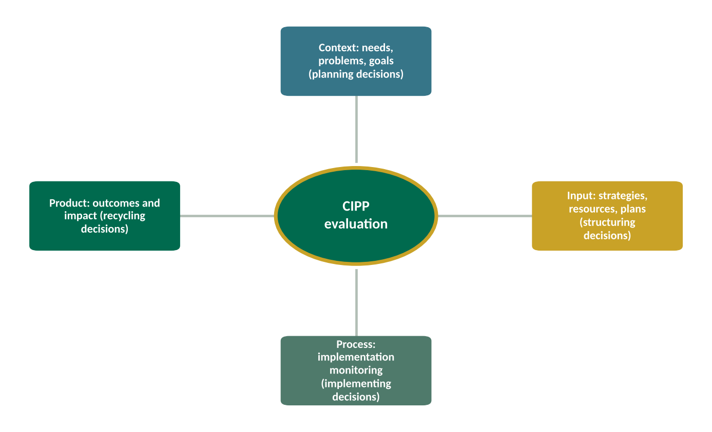
Figure 14. Stufflebeam's CIPP model
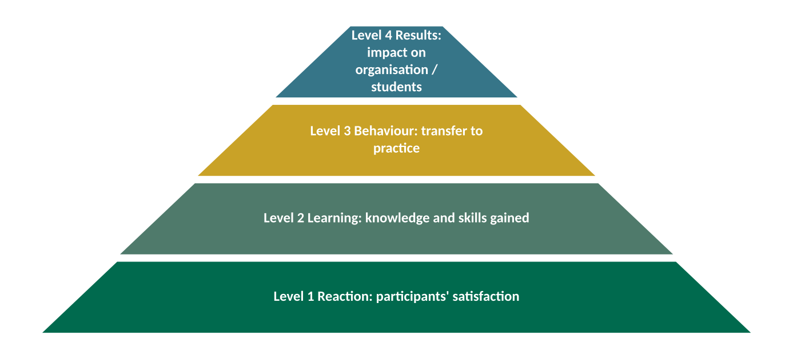
Figure 15. Kirkpatrick's four levels of training evaluation
For a teacher training programme in Bangladesh (e.g., subject-based training), try designing an evaluation using Kirkpatrick's levels and CIPP: what would you measure at each level, with what tools, and which decisions would each component inform?
Expect: "Explain the dimensions of evaluation (formative-summative, preordinate-responsive, etc.)." "Compare the classical, R&D, illuminative, teacher-as-researcher and case study models of evaluation." "What is illuminative evaluation?" "Explain the CIPP model with an educational example."
Unit 10: Methods of Evaluation
10.1 Designing evaluation questions
Good evaluation questions are answerable, relevant to intended users, linked to programme logic and feasible. Types: descriptive (What happened?), normative (Did it meet standards?), causal (Did it cause the change?), and value questions (Was it worth it?).
| Type | Question |
|---|---|
| Descriptive | How many children receive meals daily and of what quality? |
| Process | Is food delivered on time and with hygiene standards? |
| Outcome | Has attendance increased in participating schools? |
| Impact | Has the programme improved learning outcomes compared with similar non-participating schools? |
| Efficiency | What is the cost per additional day of attendance? |
| Sustainability | Can communities and government sustain the programme after donor funding ends? |
Table 33. Examples of evaluation questions for a school feeding programme
10.2 The evaluator's role
| Role | Description |
|---|---|
| Judge | Determines merit and worth using criteria (Scriven) |
| Methodologist / scientist | Designs rigorous studies to establish effects |
| Facilitator / collaborator | Works with stakeholders to build evaluation capacity (empowerment, participatory) |
| Educator | Helps stakeholders learn from evaluation |
| Negotiator / broker | Mediates among interests (democratic evaluation) |
| Internal vs external | Internal knows context but may be biased; external is independent but less familiar |
Table 34. Roles of the evaluator
The Program Evaluation Standards (Joint Committee, Yarbrough et al., 2011) define quality in terms of utility, feasibility, propriety, accuracy and evaluation accountability.
10.3 Evaluation methods: frameworks for data collection
Logic model / theory of change to identify what to measure at each stage.
Evaluation matrix linking questions, indicators, data sources and methods.
Designs: experimental (RCT), quasi-experimental (difference-in-differences, regression discontinuity, propensity score matching), pre-post, case study, mixed methods.
Data collection methods: tests, surveys, interviews, FGDs, observation, document review, administrative data (EMIS), cost data.
Sampling: representative for outcomes; purposive for process.
10.4 Analysing data: qualitative and quantitative
Quantitative: descriptive statistics, comparison of groups (t-tests, ANOVA), regression, effect sizes, cost-effectiveness ratios. Qualitative: thematic analysis of interviews and observations, case narratives, contribution analysis. Mixed: joint displays and triangulation.
10.5 Reporting evaluation
| Section | Content |
|---|---|
| Executive summary | Purpose, key findings, recommendations (2 to 4 pages) |
| Introduction | Background, programme description, evaluation purpose and questions |
| Methodology | Design, data sources, sampling, tools, analysis, limitations, ethics |
| Findings | Organised by evaluation questions or criteria |
| Conclusions | Judgements of merit and worth |
| Recommendations | Specific, actionable, prioritised, addressed to responsible actors |
| Lessons learned | Insights for other programmes |
| Annexes | Terms of reference, instruments, data tables |
Table 35. Structure of an evaluation report
Reports should be tailored to audiences: policy briefs for decision-makers, community feedback meetings, infographics, and technical reports for specialists.
10.6 Learning from evaluation
Evaluation is valuable only when used. Types of use: instrumental (direct decisions), conceptual (changing understanding), process use (learning from participating in evaluation) and symbolic (legitimising decisions). Patton's (2008) utilisation-focused evaluation designs evaluations from the start for "intended use by intended users". Organisations learn through management response plans, follow-up of recommendations, dissemination, and building a culture of evidence.
Large programmes in Bangladesh, such as PEDP, stipend programmes and school feeding, have been evaluated through joint annual reviews, mid-term reviews and impact evaluations (e.g., by the World Bank, BIDS and IFPRI). Evaluations of the school feeding programme, for example, found improvements in enrolment and attendance. Use of evaluation findings in policy has been uneven; strengthening the Implementation Monitoring and Evaluation Division (IMED) and institutional M&E capacity is an ongoing need.
Cite specific evaluation findings (e.g., attendance gains from school feeding or stipends) only after checking the original evaluation reports.
Expect: "How would you design a programme evaluation? Explain evaluation questions, the evaluator's role, data collection, analysis and reporting." "What is utilisation-focused evaluation?" "Design an evaluation of a teacher training programme in Bangladesh."
Exam Preparation Bank
A. Multiple-choice questions
1. "It is what the learner does that he learns, not what the teacher does" is associated with:
(a) Tyler (b) Bloom (c) Skinner (d) Bruner
Show answer
Answer: (a)
2. The revised Bloom's taxonomy was published by:
(a) Krathwohl and Masia (b) Anderson and Krathwohl (c) Biggs and Collis (d) Gronlund and Linn
Show answer
Answer: (b)
3. The highest level of the revised Bloom's taxonomy is:
(a) Evaluate (b) Create (c) Analyse (d) Synthesise
Show answer
Answer: (b)
4. The SOLO taxonomy level at which aspects are integrated into a coherent whole is:
(a) Multistructural (b) Relational (c) Unistructural (d) Prestructural
Show answer
Answer: (b)
5. Constructive alignment was proposed by:
(a) Black and Wiliam (b) Biggs (c) Earl (d) Sadler
Show answer
Answer: (b)
6. "Inside the Black Box" (1998) is about:
(a) Summative testing (b) Formative assessment (c) Programme evaluation (d) Item analysis
Show answer
Answer: (b)
7. Assessment AS learning emphasises:
(a) Certification (b) Metacognition and self-regulation (c) Ranking (d) Accountability
Show answer
Answer: (b)
8. The three conditions for effective feedback (goal, current position, closing the gap) were identified by:
(a) Sadler (b) Scriven (c) Stake (d) Tyler
Show answer
Answer: (a)
9. Campbell's law concerns:
(a) Reliability of tests (b) Corruption of indicators used for decisions (c) Formative assessment (d) Item difficulty
Show answer
Answer: (b)
10. The halo effect in marking is a type of:
(a) Content bias (b) Rater bias (c) Sampling error (d) Linguistic bias
Show answer
Answer: (b)
11. Assessment that compares a student's current performance with his or her own previous performance is:
(a) Norm-referenced (b) Criterion-referenced (c) Ipsative (d) Diagnostic
Show answer
Answer: (c)
12. Assessment used to identify persistent learning difficulties is:
(a) Placement (b) Diagnostic (c) Summative (d) Formative
Show answer
Answer: (b)
13. The "minute paper" is an example of:
(a) Standardised testing (b) Classroom assessment technique (c) Programme evaluation (d) Moderation
Show answer
Answer: (b)
14. Authentic assessment was popularised by:
(a) Grant Wiggins (b) Michael Scriven (c) Ralph Tyler (d) Robert Stake
Show answer
Answer: (a)
15. A test blueprint is also called a:
(a) Rubric (b) Table of specifications (c) Moderation sheet (d) Item bank
Show answer
Answer: (b)
16. An item answered correctly by 16 of 20 upper-group and 8 of 20 lower-group students has a discrimination index of:
(a) 0.20 (b) 0.40 (c) 0.60 (d) 0.80
Show answer
Answer: (b)
17. The difficulty index of the same item is:
(a) 0.40 (b) 0.50 (c) 0.60 (d) 0.80
Show answer
Answer: (c)
18. In MCQ construction, wrong options are called:
(a) Keys (b) Stems (c) Distractors (d) Premises
Show answer
Answer: (c)
19. A common flaw in MCQs is:
(a) Clear stem (b) Plausible distractors (c) Longest option being correct (d) One best answer
Show answer
Answer: (c)
20. In Bangladesh's creative questions, part (d) assesses:
(a) Knowledge (b) Comprehension (c) Application (d) Higher-order abilities
Show answer
Answer: (d)
21. Teachers meeting to agree on standards using samples of student work is:
(a) Statistical moderation (b) Consensus moderation (c) Item analysis (d) Norming
Show answer
Answer: (b)
22. A rubric giving a single overall score is:
(a) Analytic (b) Holistic (c) Single-point (d) Checklist
Show answer
Answer: (b)
23. For a 4-option MCQ test, the corrected score for R = 40, W = 12 is:
(a) 36 (b) 37 (c) 34 (d) 28
Show answer
Answer: (a)
24. Brief factual descriptions of significant incidents in a student's behaviour are:
(a) Rating scales (b) Anecdotal records (c) Checklists (d) Inventories
Show answer
Answer: (b)
25. RIASEC is associated with:
(a) Kuder (b) Holland (c) Strong (d) Cattell
Show answer
Answer: (b)
26. The Big Five factor "N" stands for:
(a) Narcissism (b) Neuroticism (c) Novelty (d) Normality
Show answer
Answer: (b)
27. In Bangladesh, the SSC grade point for 70-79% marks is:
(a) 5.00 (b) 4.00 (c) 3.50 (d) 3.00
Show answer
Answer: (b)
28. The PECE in Bangladesh was taken at the end of Grade:
(a) 3 (b) 5 (c) 8 (d) 10
Show answer
Answer: (b)
29. "The process of determining the merit, worth or value of something" defines evaluation according to:
(a) Scriven (b) Tyler (c) Stufflebeam (d) Weiss
Show answer
Answer: (a)
30. Evaluation as "the process of delineating, obtaining and providing useful information for judging decision alternatives" is by:
(a) Stufflebeam (b) Scriven (c) Stake (d) Patton
Show answer
Answer: (a)
31. "When the cook tastes the soup, that's formative" is attributed to:
(a) Robert Stake (b) Michael Scriven (c) Ralph Tyler (d) Lee Cronbach
Show answer
Answer: (a)
32. The preordinate-responsive distinction was made by:
(a) Stake (b) Scriven (c) Tyler (d) Parlett
Show answer
Answer: (a)
33. Illuminative evaluation was proposed by:
(a) Parlett and Hamilton (b) Stufflebeam and Shinkfield (c) Pawson and Tilley (d) Kirkpatrick
Show answer
Answer: (a)
34. The concept of "learning milieu" belongs to:
(a) CIPP model (b) Illuminative evaluation (c) Goal-free evaluation (d) Kirkpatrick model
Show answer
Answer: (b)
35. The "agriculture-botany" model of evaluation is criticised mainly for:
(a) Using qualitative data (b) Ignoring context and process (c) Being too participatory (d) Lacking objectives
Show answer
Answer: (b)
36. CIPP stands for:
(a) Content, Input, Process, Product (b) Context, Input, Process, Product (c) Context, Instruction, Performance, Product (d) Criteria, Input, Process, Purpose
Show answer
Answer: (b)
37. Goal-free evaluation was proposed by:
(a) Scriven (b) Tyler (c) Stake (d) Provus
Show answer
Answer: (a)
38. Kirkpatrick's level 3 evaluates:
(a) Reaction (b) Learning (c) Behaviour (d) Results
Show answer
Answer: (c)
39. Utilisation-focused evaluation was developed by:
(a) Michael Patton (b) Carol Weiss (c) David Fetterman (d) Egon Guba
Show answer
Answer: (a)
40. The OECD-DAC evaluation criteria include relevance, coherence, effectiveness, efficiency, impact and:
(a) sustainability (b) reliability (c) validity (d) equity
Show answer
Answer: (a)
B. Short-answer questions
1. Define learning experience and learning outcome.
2. Distinguish basic and higher-order learning outcomes with examples.
3. State the levels of the SOLO taxonomy.
4. What is washback? Give a positive and a negative example.
5. Distinguish assessment of, for and as learning.
6. State Wiliam's five key strategies of formative assessment.
7. Name five sources of bias in assessment.
8. Distinguish norm-referenced and criterion-referenced assessment.
9. What is continuous assessment? State its purposes.
10. Define authentic assessment and give two examples.
11. State five principles of constructing MCQs.
12. Compute p and D for an item answered correctly by 12 of 15 upper and 6 of 15 lower group students.
13. What are the steps of test standardisation?
14. What is moderation? Name its types.
15. Distinguish analytic and holistic rubrics.
16. State the formula for correction for guessing and explain it.
17. Distinguish rating scales and checklists.
18. Distinguish assessment and evaluation.
19. Distinguish formative and summative evaluation.
20. State the components of the CIPP model.
C. Broad (essay) questions
1. Discuss the relationship between learning, learning theories and assessment, with reference to constructive alignment and formative assessment research.
2. Explain assessment of, for and as learning. How can a balanced assessment system be developed in Bangladeshi secondary schools?
3. Discuss the side-effects of assessment and sources of bias, with examples from Bangladesh, and suggest remedies.
4. Explain continuous, performance-based, classroom, alternative and authentic assessment. Discuss their roles in improving students' learning.
5. Describe the principles of constructing essay, objective and structured (creative) questions. Prepare a table of specifications and sample items for a unit of your choice.
6. Explain item analysis and the standardisation of a test with examples.
7. What is moderation? Discuss the development and use of rubrics in marking and reporting, and the principles of assessing essay answers.
8. Discuss observational, peer appraisal and self-report techniques for assessing learning and development.
9. Critically analyse the student assessment situation at primary, secondary, higher secondary and higher education levels in Bangladesh.
10. Define evaluation and distinguish it from assessment. Explain programme evaluation and its steps.
11. Compare the classical, R&D, illuminative, teacher-as-researcher and case study models of evaluation. Which would you choose to evaluate a new curriculum in Bangladesh and why?
12. Design an evaluation of an education programme in Bangladesh, specifying evaluation questions, evaluator's role, data collection framework, analysis, reporting and use.
References
Anderson, L. W., & Krathwohl, D. R. (Eds.). (2001). A taxonomy for learning, teaching, and assessing: A revision of Bloom's taxonomy of educational objectives. Longman.
Angelo, T. A., & Cross, K. P. (1993). Classroom assessment techniques: A handbook for college teachers (2nd ed.). Jossey-Bass.
Begum, H. A., & Ahmed, S. S. (2007). Assessment tools used in secondary schools: Do they encourage higher order learning? NAEM Journal, 3(5), 7-24.
Begum, M., & Farooqui, S. (2008). School based assessment: Will it really change the education scenario in Bangladesh? International Education Studies, 1(2), 45-53.
Biggs, J., & Collis, K. F. (1982). Evaluating the quality of learning: The SOLO taxonomy. Academic Press.
Biggs, J., & Tang, C. (2011). Teaching for quality learning at university (4th ed.). Open University Press.
Black, P., & Wiliam, D. (1998). Inside the black box: Raising standards through classroom assessment. Phi Delta Kappan, 80(2), 139-148.
Bloom, B. S., Engelhart, M. D., Furst, E. J., Hill, W. H., & Krathwohl, D. R. (1956). Taxonomy of educational objectives: Handbook I. Cognitive domain. David McKay.
Brookhart, S. M. (2013). How to create and use rubrics for formative assessment and grading. ASCD.
Campbell, D. T. (1976). Assessing the impact of planned social change. Public Affairs Center, Dartmouth College.
Earl, L. M. (2013). Assessment as learning: Using classroom assessment to maximize student learning (2nd ed.). Corwin.
Fitzpatrick, J. L., Sanders, J. R., & Worthen, B. R. (2012). Program evaluation: Alternative approaches and practical guidelines (4th ed.). Pearson.
Frary, R. B. (1988). Formula scoring of multiple-choice tests (correction for guessing). Educational Measurement: Issues and Practice, 7(2), 33-38.
Gipps, C. V. (1994). Beyond testing: Towards a theory of educational assessment. Falmer Press.
Harlen, W. (2007). Assessment of learning. Sage.
Hattie, J., & Timperley, H. (2007). The power of feedback. Review of Educational Research, 77(1), 81-112.
Hopkins, D. (1989). Evaluation for school development. Open University Press.
Kirkpatrick, D. L., & Kirkpatrick, J. D. (2006). Evaluating training programs: The four levels (3rd ed.). Berrett-Koehler.
Kubiszyn, T., & Borich, G. D. (2016). Educational testing and measurement: Classroom application and practice (11th ed.). Wiley.
MacDonald, B. (1976). Evaluation and the control of education. In D. Tawney (Ed.), Curriculum evaluation today: Trends and implications (pp. 125-136). Macmillan.
Miller, M. D., Linn, R. L., & Gronlund, N. E. (2013). Measurement and assessment in teaching (11th ed.). Pearson.
Mullick, J. I., & Begum, H. A. (2005). Biases in current assessment practices at secondary level education in Bangladesh. Bangladesh Education Journal, 4(2), 47-63.
Parlett, M., & Hamilton, D. (1972). Evaluation as illumination: A new approach to the study of innovatory programmes (Occasional Paper No. 9). Centre for Research in the Educational Sciences, University of Edinburgh.
Patton, M. Q. (2008). Utilization-focused evaluation (4th ed.). Sage.
Pawson, R., & Tilley, N. (1997). Realistic evaluation. Sage.
Rowntree, D. (1987). Assessing students: How shall we know them? (2nd ed.). Kogan Page.
Sadler, D. R. (1989). Formative assessment and the design of instructional systems. Instructional Science, 18(2), 119-144.
Scriven, M. (1991). Evaluation thesaurus (4th ed.). Sage.
Scriven, M. (1967). The methodology of evaluation. In R. W. Tyler, R. M. Gagné, & M. Scriven (Eds.), Perspectives of curriculum evaluation (pp. 39-83). Rand McNally.
Stake, R. E. (1975). Evaluating the arts in education: A responsive approach. Merrill.
Stake, R. E. (1967). The countenance of educational evaluation. Teachers College Record, 68(7), 523-540.
Stufflebeam, D. L., & Coryn, C. L. S. (2014). Evaluation theory, models, and applications (2nd ed.). Jossey-Bass.
Tarrant, M., Knierim, A., Hayes, S. K., & Ware, J. (2006). The frequency of item writing flaws in multiple-choice questions used in high stakes nursing assessments. Nurse Education Today, 26(8), 662-671.
Tyler, R. W. (1949). Basic principles of curriculum and instruction. University of Chicago Press.
Weiss, C. H. (1972). Evaluation research: Methods for assessing program effectiveness. Prentice Hall.
Wiggins, G. (1990). The case for authentic assessment. Practical Assessment, Research & Evaluation, 2(2), Article 2.
Wiliam, D. (2011). Embedded formative assessment. Solution Tree Press.
Wilmut, J., & Tuson, J. (2005). Statistical moderation of teacher assessments: A report to the Qualifications and Curriculum Authority. QCA.
Yarbrough, D. B., Shulha, L. M., Hopson, R. K., & Caruthers, F. A. (2011). The program evaluation standards: A guide for evaluators and evaluation users (3rd ed.). Sage.